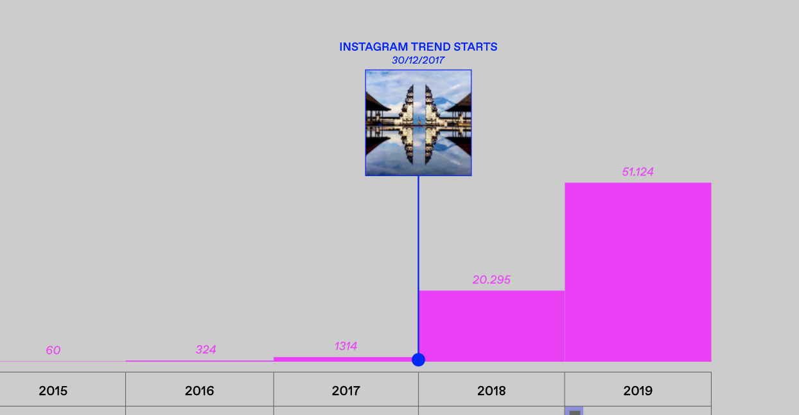
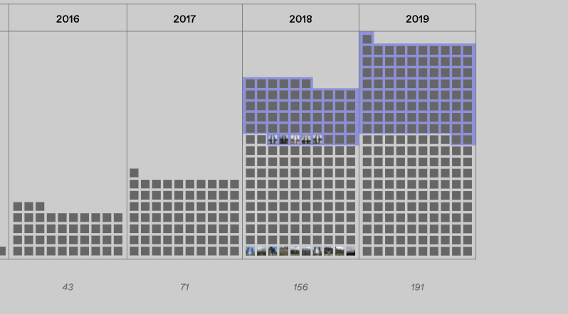

“Wait, I’ve seen that picture before! It’s trending on social media!” Instagram has rapidly and steadily changed the way we perceive places and choose our destinations. We identified one of the biggest stereotypical Instagram travel trends and analyzed it. Could the beginning of a simple photographic trend boost tourism so much so that people travel to the place just to be part of an iconic location?
By analyzing the pictures on Instagram we discovered when the first stereotyped image was taken (April, 2017). Not long after this trend took over, Tripdavisor review’s photos started to look the same as Instagram’s, therefore the Instagram photographic trend influenced Tripadvisor reviews’ photos.
The interest for this specific place grows over time simultaneously on the two platforms. When the trend hits the platform, people post more about it and interest grows exponentially. Moreover the amount of images that follow the trend of the years changes. In 2017 out of all the pictures collected on Tripadvisor none were following the trend. In 2018, 54 images out of 156 were on trend. In 2019, 83 images followed the Instagram trend out of 191.
